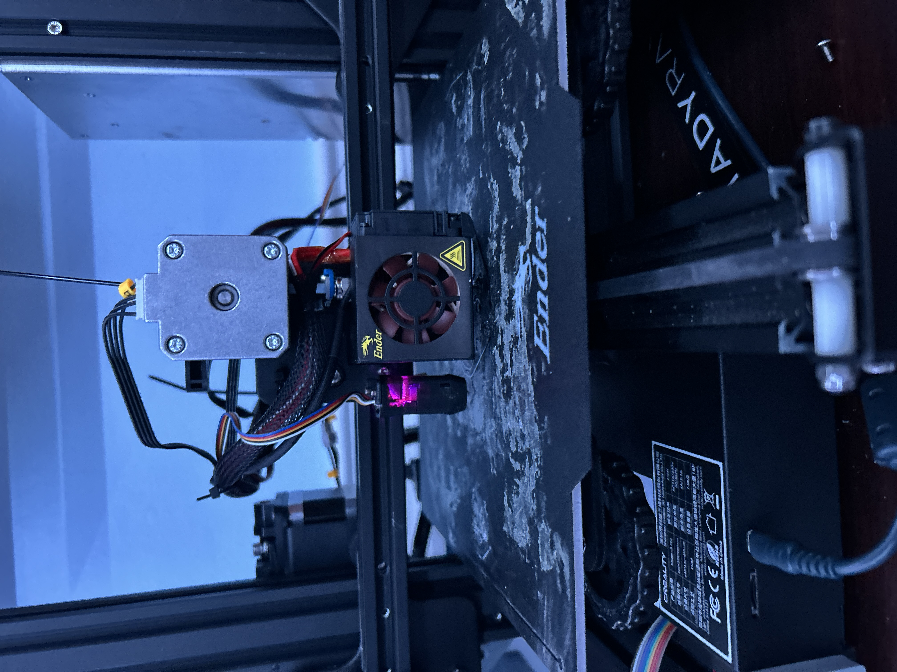

Problem
- Engineer custom solutions from scratch
- Learn how to be an efficient prototyper and 3D modeler
- Optimize FDM 3D printing workflows for dimensional accuracy and reliability
My experience with 3D printing, including designing and printing various objects using a Ender 3 Pro 3D Printer.

A photo of my modded Ender 3 Pro.
My Ender 3 Pro printing a flexible part using a rubber-like filament